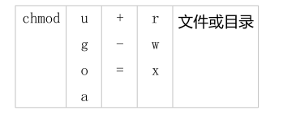

Linux文件属性和权限 一.文件存取访问身份 有三种身份:用户 /用户组/其他
二.文件属性 我们在用ls列举出当前工作目录下的文件时，显示的只是文件或目录名，要想显示属性，使用ls -l，要列举出隐藏文件，使用ls -al。
文件种类以及其属性表示
三.文件属性的更改 1.改变文件所有者chown
2.改变文件所属用户组chgrp
3.文件属性需要修改的常见场景
四、文件权限 1.文件权限含义
1 2 3 4 文件权限三个为一组，均为“rwx”三个参数的组合read 代表可读write 代表可写execute 代表可执行
2.文件权限的数字表示
1 2 3 4 5 三个权限的位置不会改变，可以使用数字来代表各个权限4 2 x ：1
3.文件权限的修改
1 2 3 4 5 6 1 .数字类型的修改[-R] number 文件或目录2 .字符类型的修改a 代表全部的身份

五、权限掩码umask（umask用来设置默认权限的） 在linux下我们查看的方式有两种：
1 2 一种可以直接输入umask ，就可以看到数字形态的权限设置分数，
六，特殊权限 1.s权限
suid
当s权限位于可执行命令所有者的位置时，其他用户执行时将具有所有者的权限
1 2 3 4 5 接下来我们给vim 命令的所有者位置增加一个s权限：u +s $(which vim )ll $(which vim )x . 1 root root 2289600 1 月 30 2014 /usr/bin/vim vim 往/opt /test.txt写内容。
sgid
s位于目录的所属组位置时，不管哪个用户在该目录下创建文件或目录，都会继承该目录的所属组
2.T权限
1 2 3 4 5 6 7 8 9 10 11 [root@www ~]@www ~]@www ~]@www ~]@www ~]$ rm -rf /opt/test2/test@www ~]@www ~]@www ~]@www ~]$ rm -rf /opt/test2/testrm: 无法删除"/opt/test2/test" : 不允许的操作
chmod 7777 file
七、文件属性 chattr 语法：
1 2 3 4 5 6 7 8 9 10 11 12 chattr [ -RVf ] [ -v version ] [ mode ] files...: : 在原有参数设定基础上，追加参数time )不可被修改(modified),可以有效预防例如手提电脑磁盘I/O错误的发生
示例:
1 2 chattr +i 1 .txt 固定i 1 .txt 解除
lsattr语法:
1 2 3 4 5 lsattr [ -RVadv ] [ files... ] a : 列出目录下的所有文件，包括隐藏文件d : 查看本目录自身的权限